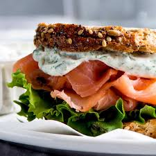

Smoked Salmon Sandwich Recipe
Home

Description
The Smoked Salmon Sandwich is so underrated its truly a gem it's nutrious and very quick and easy to make!
Ingredients:
- Sourdough bread
- Smoked Salmon
- Cream cheese
- Any veggies of your choice really I recommend cucumbers, red onions and or lettuce
- Capers
The following are optional:
- Dill , chives or any other herbs
- Lemon
Steps:
- This is totally optional but I liked to start with my sourdough slices toasted
- Next we spread our cream cheese on our toasted slices
- After this step we add our smoked salmon
- Lastly we add our veggies of choice and the capers perfect time to add our optional ingredients too!
- And voila! truly the easiest most yummiest sandwich to make